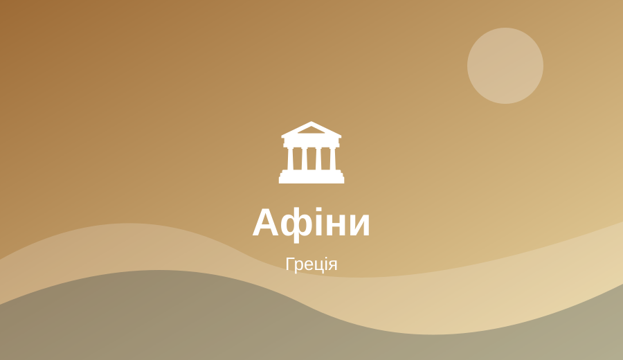

Афіни, Греція
Афіни захоплюють тим, як пам’ятки давнини живуть поруч із сучасними вулицями й кафе.

Визначні пам’ятки
Акрополь, Парфенон, район Плака та Національний археологічний музей.
Кухня та гастрономія
Грецький салат, сувлакі, мусака та пахлава.
Культура та традиції
Антична спадщина, відкриті площі й традиції грецького гостинного спілкування.
Чому я обрав це місто
Афіни захоплюють тим, як пам’ятки давнини живуть поруч із сучасними вулицями й кафе. Для мене це приклад того, наскільки різними можуть бути міста світу.